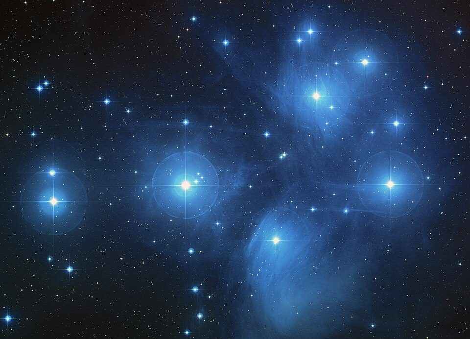

Types of stars and their colours
Blue, white, yellow, orange and red: a star's colour reveals its temperature, and its brightness, its size and age.


To the naked eye almost all stars look like white dots, but look carefully and you will see that Betelgeuse is orange and Rigel, in the same constellation of Orion, is bluish. A star's colour is like a thermometer.
Colour shows temperature
Unlike taps, in stars blue is hottest and red is coolest. Astronomers classify them with the letters O, B, A, F, G, K and M, from hottest to coolest. A classic way to remember them is "Oh Be A Fine Girl/Guy, Kiss Me".
| Type | Colour | Surface temperature | Example |
|---|---|---|---|
| O | Blue | Over 30,000 °C | Stars in Orion (Mintaka) |
| B | Bluish white | 10,000 to 30,000 °C | Rigel, Spica |
| A | White | 7,500 to 10,000 °C | Sirius, Vega |
| F | Yellowish white | 6,000 to 7,500 °C | Procyon, Polaris |
| G | Yellow | 5,200 to 6,000 °C | The Sun, Alpha Centauri A |
| K | Orange | 3,700 to 5,200 °C | Arcturus, Aldebaran |
| M | Red | Under 3,700 °C | Betelgeuse, Proxima Centauri |
Dwarfs, giants and supergiants
Besides colour, stars differ in size and brightness:
- Red dwarfs: the smallest and most common. About three in four stars in the galaxy are red dwarfs, although not one is visible to the naked eye.
- Sun-like stars: medium-sized, halfway through their lives.
- Red giants: old stars that have swollen, like Arcturus or Aldebaran.
- Supergiants: the largest of all. Betelgeuse is so big that, placed where the Sun is, it would reach almost to Jupiter.
- White dwarfs: the dead cores of stars that have died, like Sirius's companion.


The Hertzsprung–Russell diagram
In the early 20th century, the Dane Ejnar Hertzsprung and the American Henry Norris Russell had the same idea: plot stars on a chart by temperature and true brightness. To everyone's surprise, they did not fall at random but clustered in bands. Most formed a diagonal, the main sequence, while giants and white dwarfs had their own regions. That diagram is still the basic tool for understanding the life of stars.
Stars in company
More than half of Sun-like stars have at least one companion. Alpha Centauri, the nearest system, is triple: two Sun-like stars orbiting each other plus little Proxima Centauri. Others form clusters, like the Pleiades, groups of hundreds of stars born at the same time from the same cloud.
Brightness: magnitudes
Astronomers measure brightness in magnitudes, a scale inherited from the Greek Hipparchus that runs backwards: the lower the number, the brighter the star. The brightest have magnitude 0 or less (Sirius, −1.46), and from a dark sky the naked eye reaches magnitude 6. A difference of 5 magnitudes means 100 times the brightness.
Videos to understand it better
- Stars 101 | National GeographicNational Geographic · 3.8M views
- Stars: Crash Course Astronomy #26CrashCourse · 2.3M views
Videos are from YouTube and belong to their creators. They only load when you click them. See all videos →